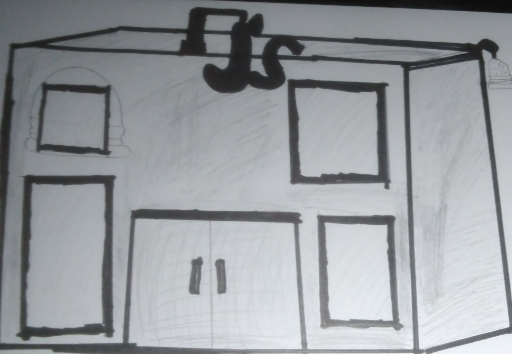

Welcome to our About page!
Here, you'll learn more about our resturant/burger joint! See the picture above for how our establishment looks like! The idea came from Juan, who's life passion were to make good food for people in his neighborhood. Once he turned 21, he decided to go to college for busieness and by the time he was 30 years old, he built up his own restaurant. Origionally, he this restaurant would be a burger joint. As time passed, he decieded to turn it into a all food restaurant and of course he would still sell his world famous burgers. By 2030, he's sold millions of food for people accross the world, J's Finest Burgers is always being visited by lots of people! Many people are being hired to be workers there with good pay. As a special thanks, those who work are allowed to take some of the leftovers. Thanks to Juan and his staff and brilliant marking staff for making it possible! Lastly, thanks to you, our amazing customers for loving our food.
We at J's Finest Burgers are all about serving the best food for our customers everytime they decide to take a trip here and we pride ourselves to be professional and to take feedback to heart and we'll have a group meeting with Juan to discuss changes that benefits both our staff and customers alike! Our building looks very basic, only thing that hangs besides it was a burger that's spinning and a J's on top also spinning to make it visable to the human eye. Windows are tanted black and they allow customers to eat without being seen through if they feel uncomfortable. Have a good time lurking through our website and if you have any questions, look through our contact page!
Below is a drawing of our establishment:
